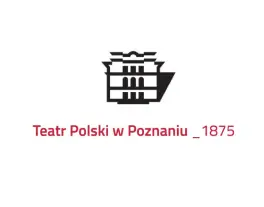

Teatr Polski
Fundacja Reszka
Teatr Polski w Poznaniu. Najstarszy teatr w Polsce, działający nieprzerwanie od roku 1875. Jego budowa została sfinansowana ze składek Polaków żyjących pod zaborami, co na elewacji upamiętnia napis „Naród sobie”. Budynek został zaprojektowany przez Stanisława Hebanowskiego, w jego formie widać inspiracje włoskim renesansem. Na jego scenie występowali m.in. Helena Modrzejewska, Gabriela Zapolska, Stefan Jaracz, Władysław Hańcza. Gmach przetrwał ostatnią wojnę i wznowił działalność w marcu 1945 roku.
Teatr Polski w Poznaniu działa na rzecz dobra powszechnego i z uwagą przygląda się widniejącej na jego fasadzie frazie „Naród sobie”. To teatr oparty na stałym zespole aktorskim, dużej inscenizacji, dobrej literaturze, grający spektakle systematycznie. Naszym celem jest przywracanie Teatrowi Polskiemu, jako instytucji usług publicznych, należnej mu godności. To teatr życzliwy dla każdego widza, walczący z wszelkimi formami wykluczenia: pokoleniowego, obyczajowego, fizycznego, światopoglądowego i klasowego. Teatr, który szuka spraw wspólnych i zapewnia ważne chwile bycia razem. Teatr, który w sojuszu z publicznością oraz licznymi przejawami lokalnego aktywizmu społecznego, szuka nowego kształtu wspólnoty. Teatr integrujący i wspierający społeczność. Budujący wspólnotę, która dziś dojmująco potrzebuje wsparcia, bo wątpi w siebie samą.
By owa wspólnota stała się zjawiskiem realnym niezbędny jest powrót do dyskutowanych niegdyś ideałów teatru popularnego, który wysokie standardy estetyczne i ideowe łączy z dbałością o komunikatywność. Troska o zrozumienie, klarowność przekazu, zaangażowanie partnerów społecznych, trafną diagnozę rzeczywistości są naczelną zasadą działalności programowej Teatru Polskiego w Poznaniu. Podstawą jego repertuaru jest dobra literatura dawna i współczesna, realizowana przez artystów średniego i młodego pokolenia. Klasyka dramatu polskiego i światowego, realizowana w nowoczesnej estetyce, odnawiająca jego ciągle aktualne sensy i ustanawiająca poczucie przynależności do wspólnej opowieści kulturowej.
Fundacja Reszka została założona w 2019 roku.
Głównymi celami fundacji są:
-
działania na rzecz społeczeństwa obywatelskiego poprzez praktyki kulturowe i działania artystyczne;
-
współpraca międzykulturowa;
-
demokratyzacja publiczności;
-
edukacja kulturowa.